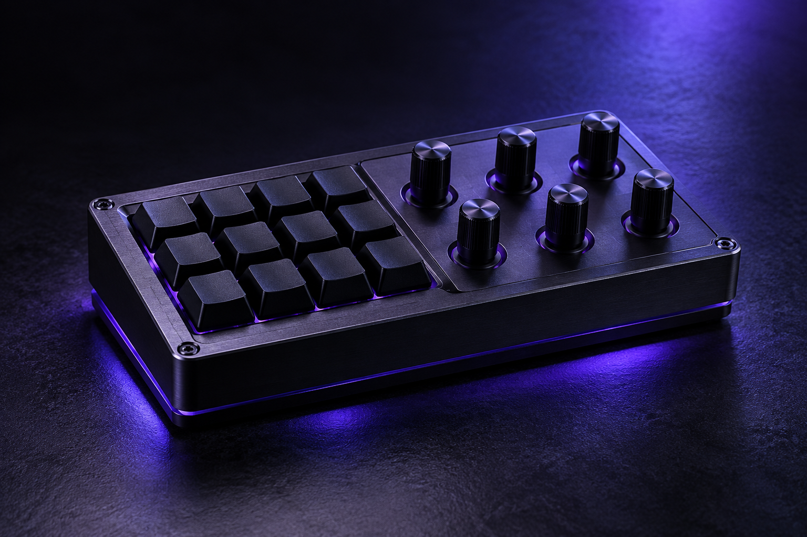

IMAGEM CONCEITUAL DE DECKRAMODELO 01 · DECKRA
DECKRA ONE
O DECKRA ONE é o primeiro modelo da linha de controladores DECKRA. Ele reúne comandos do computador em um só lugar para deixar o seu espaço de criação, trabalho ou diversão mais prático.
Com o software DECKRA, você pode escolher aplicativos para controlar o volume e configurar funções ou atalhos para as teclas. Assim, o controle se adapta ao jeito que você usa o computador — para criar, jogar, ouvir música ou organizar suas tarefas.